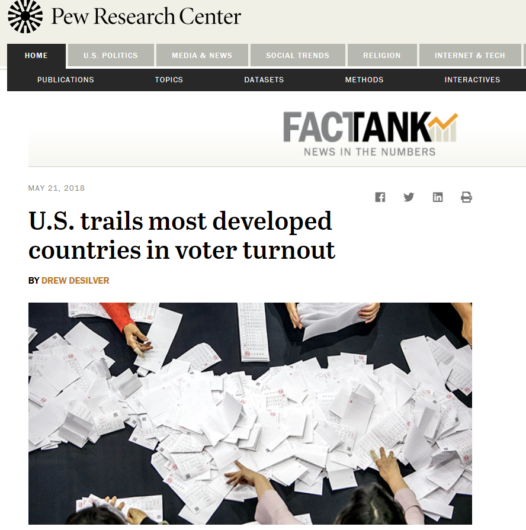

Topic Overview
Link to the article
Nearly 56% of the U.S. voting-age population cast ballots in the 2016 presidential election, representing a slight uptick
compared with 2012 but less than in the record year of 2008. While most Americans – 70% in a recent Pew Research Center survey
– say high turnout in presidential elections is very important, what constitutes “high turnout” depends very much on which
country you’re looking at and which measuring stick you use. The Census Bureau estimated that there were 245.5 million Americans
ages 18 and older in November 2016, about 157.6 million of whom reported being registered to vote. (While political scientists
typically define turnout as votes cast divided by the number of eligible voters, in practice turnout calculations usually
are based on the estimated voting-age population, or VAP.) Just over 137.5 million people told the census they voted in 2016,
somewhat higher than the actual number of votes tallied – nearly 136.8 million, according to figures compiled by the Office
of the Clerk of the U.S. House of Representatives, though that figure includes more than 170,000 blank, spoiled or otherwise
null ballots. That sort of overstatement has long been noted by researchers; the comparisons and charts in this analysis
use the House Clerk’s figure, along with data from the International Institute for Democracy and Electoral Assistance (IDEA)
and individual nations’ statistical and elections authorities. The 55.7% VAP turnout in 2016 puts the U.S. behind most of
its peers in the Organization for Economic Cooperation and Development (OECD), most of whose members are highly developed,
democratic states. Looking at the most recent nationwide election in each OECD nation, the U.S. placed 26th out of 32 (current
VAP estimates weren’t available for three countries).
Low voter turnout in the United States has confounded politicians, activists and academics seeking to reverse a trend that puts the country behind many of the world’s developed nations in participation at the polls. In August, the Pew Research Center ranked the U.S. 31st out of 35 countries for voter turnout based on the voting age populace, among the mostly democratic nations that are a part of the Organization for Economic Cooperation and Development. The study showed 53 percent of eligible voters in the U.S. cast ballots in 2012, the last time a presidential election was held, with about 129 million people out of a potential 241 million citizens taking part in the election. In recent history, participation in the U.S. has peaked during presidential elections, when the last several decades show about 55 to 60 percent of the eligible electorate will vote. But those numbers trail off during non-presidential years and in primary races. Internationally, Belgium had the highest participatory rate in its most recent election at 87 percent, followed by Turkey at 84 percent and Sweden at 82 percent. The study found that compulsory voting often had an impact on voter turnout, which was the case with three of the top five ranked countries, including Belgium and Turkey. While mandatory voting is unlikely to happen in the U.S., some states are looking to improve those statistics, even though many concede the reasons for low voter turnout are both varied and elusive. According to interviews with research institutions, advocacy groups and legislators involved in those efforts, restrictive voting laws in some states discourage the electorate from registering to vote. Additionally, they said gerrymandered districts cut across party lines reducing the number of competitive races and interest, and disgruntled citizens, fed up with the often contentious nature of politics, can choose not participate. But David Becker, who led Pew’s election work before launching the Center for Election Innovation & Research (CEIR), an organization whose goal is to increase voter turnout, said none of those potential causes are wholly responsible for the dismal turnout statistics. “The short answer you’ll probably hear is nobody really knows,” Becker said. “There has been a lot of money and a lot of efforts to increase turnout. There is no one answer to why, all we can say is here is the effect.” According to the United States Election Project, which tracks voting trends, only 36 percent of registered voters cast ballots during the 2014 election cycle, the lowest turnout in a general election since 1942, when many of the nation’s young people were out of the country fighting in World War II. Becker said only three of 10 voters participated in presidential primaries this year. “A smaller and smaller slice of the electorate are making decisions that are important,” he said. Voter participation also depends on the state where you vote. According to a Wall Street Journal analysis on state participation, fewer Americans vote when their states are less competitive in races between Democrats and Republicans. Many of the states with the lowest turnout are dominated by the Republican Party in the South, where restrictive laws can hamper participation. But two states known to be solid Democratic Party supporters – Hawaii and New York – also fall in the bottom 20 percent of turnout. In 2016 alone, at least 14 states installed restrictive voting laws around the country, including limitations on voter registration, photo ID mandates and narrower time periods for early voting, according to the Brennan Center for Justice. In New York, voters have chosen Democrats in every statewide election since 2002, according to Blair Horner, legislative director with the New York Public Interest Research Group. While the lack of competitive elections are a factor for low turnout, it may also be attributed to other issues like one-sided political districts and a timetable to register that is “among one of the longer ones in the country.” “Voting is a hassle and the elections are run in a very chaotic way,” Horner said, especially in New York City. “I don’t think the political establishment has incentive to expand the electorate.” Since 2012, New York State Assemblyman Brian Kavanagh has pushed for legislation that could address some of those issues, such as early voting, extended registration deadlines and updated technology at polling places, but so far few of them have received broad support, he said. “Lines are often too long, poll workers are often confused, administration of polling sites are often challenging,” Kavanagh said. “I would say there’s no magic bullet. But New York has systematically failed to have an election system to keep up with election practices.” Becker said nationally, these issues can vary by states and even by election cycles. “There’s a variety of reasons why people aren’t voting,” he said. “The number that drives me the most is 47 million. That’s the number of people who voted in 2012 that didn’t vote in 2014. For some reason nearly 50 million people didn’t show up who had voted before.” While solutions to the voting dilemma remain fluid, the turnout rate in the U.S. may also come down to the age of the country’s democracy, Becker said. One Harvard University study found that citizens from advanced democratic nations tend to abstain from voting. “A lot of these democracies are younger,” Becker said, of countries that were ranked. “We’ve been having elections for almost 250 years. That’s a lot different than Germany.” The political climate is not very inclusive at the moment in the United States, and I think the best way to make a difference is to go out and vote for the candidate you think is right.